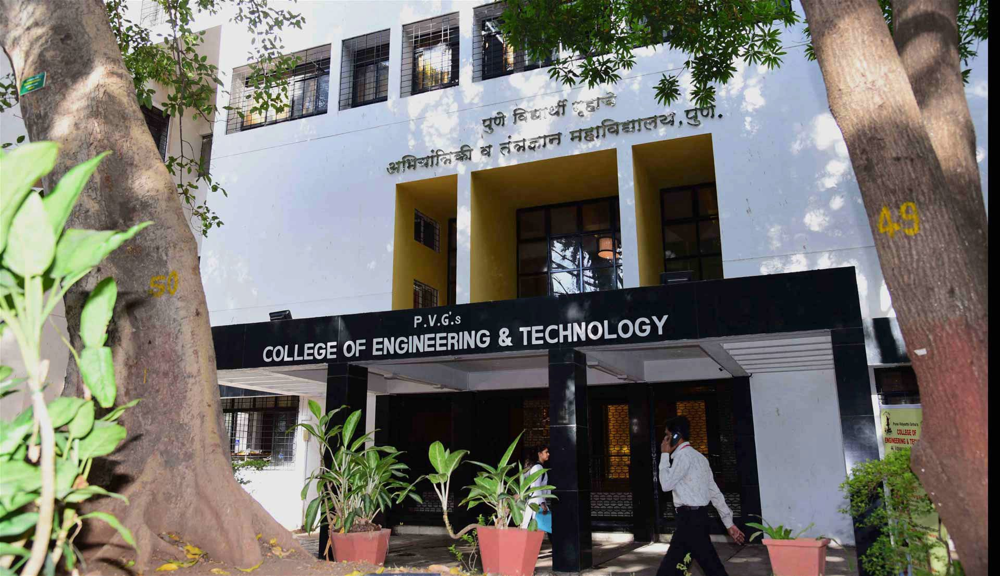

Pune Vidyarthi Griha's College of Engineering and Technology & G K Pate (Wani) Institute of Management
Approved by AICTE, DTE (Code: 6274) | Affiliated to SPPU, Pune | NAAC Second Cycle 'A' Grade
About Us
About PVG’s COET & GKPIOM
Established in 1985, Pune Vidyarthi Griha’s College of Engineering and Technology and G.K. Pate (Wani) Institute of Management (formerly known as College of Engineering and Technology) is approved by AICTE and affiliated to the Savitribai Phule Pune University and accredited ‘A’ Grade by NAAC in 3rd cycle. It is one of the reputed engineering colleges in India. In 2020, the institute has merged with G. K. Pate (Wani) Institute of Management (‘GKPIOM’) for the management programme. The PVG’s COET and GKPIOM runs undergraduate programmes in Printing and Packaging Technology, Mechanical Engineering, Electrical Engineering, Electronics & Telecommunication Engineering, Computer Engineering, Information Technology, Artificial Intelligence & Data-Science, and postgraduate programmes in Electrical Engineering, Printing Technology, and Business Administration. The college also runs PhD programmes in Printing Technology, Mechanical Engineering and Electrical Engineering. Vision: To achieve excellence in engineering education.
Mission: ● To satisfy all stakeholders. ● To develop ethical, highly motivated engineering professionals with good human values, requisite skills and competencies. ● To adopt innovative teaching mechanisms. ● To promote research culture. ● To contribute to country’s economic developments ● To be responsive to changes in technology, socio-economic and environmental conditions
About Department of E&TC

The Electronics and Telecommunication Engineering Department was established in 1991 with undergraduate programme in E&TC. The department has qualified, experienced and dedicated teaching staff. Department emphasizes an effective teaching-learning process with an excellent teaching-learning environment. The department offers honours courses in AI-ML and Electric Vehicle in addition to regular undergraduate programme and promotes internships and online courses like NPTEL, COURSERA etc for effective learning. The department inspires its students for problem based / project based / outcome based learning. The department staff is actively involved and contributed to many interdisciplinary platforms like VLAB, ED cell, Robotics Club, GATE training facility and Institute’s Innovation Cell (IIC). The department has a remarkable and outstanding students’ association, TESA. The department has a Smart Classroom, a niche facility as the platform for Digital Teaching and Learning. It has a strong network of distinguished and successful alumni contributing and sharing their knowledge for its continual progress. The department of E&TC has strong placement records and the alumni of the department are working in many prestigious companies like Google, Microsoft, Intel Corporation, Infosys, TCS, Wipro, IBM, KPIT, Persistent Systems, Siemens, Fanuc, RAJA software, Mitsubishi and many more. Besides, the department runs Study Work Go Japan: An International Recruitment Program for placements in Japanese companies and successfully placed many students. Many of the students of the department successfully got admitted to higher studies in IITs and prestigious universities in USA, Australia, Germany, Canada etc. Few of them became entrepreneurs as well.
Mission: ● To impart quality education in Electronics and Telecommunication Engineering and technology to satisfy all the stake holders ● To facilitate techno-social and economic growth ● To develop active learners and competitive engineers for sustainable technical growth through lifelong learning and ICT based education ● To provide skill and value-based education to address societal issues.
About Savitribai Phule Pune University

Savitribai Phule Pune University (formerly University of Pune) was established on February 10, 1949 under the Poona University Act. The university houses 52 academic departments. It is popularly known as the 'Oxford of the East'. It has about 307 recognized research institutes and 950 affiliated colleges offering graduate and under-graduate courses. Due to its excellent reputation and facilities the university attracts many foreign students. The Mission of Savitribai Phule Pune University is to be a global, socially conscious Center of Excellence in the conservation, creation, advancement and dissemination of knowledge.It is equipped to take up challenges of the enormous change taking place all around and committed to empower its faculty and students to contribute meaningfully to economic, technological and social development.
The Department of Education & Extension welcomes all the students who aspire to build their Career in Education. This Department was established in 1990 which aims at research and is a higher learning centre. Under Extension activities Department has established 'Advance Technology Blind Students Learning Center', for accessibility and worked with many International Universities in context of students excellence programme .This centre is equipped with computer facility and advanced learning software for visually impaired
About TESA

Telecommunication Engineering Students Association (TESA): The Electronics and Telecommunication Engineering department of Pune Vidyarthi Griha’s College of Engineering and Technology, with the coordination of students and under the guidance of the staff of the department have built a student association, Telecommunication Engineering Students’ Association (TESA). This Association was formed in order to integrate the leadership qualities of the student and form a body which conducts various activities and events giving each and every student a platform to enhance and better their skills while working on projects that illuminates their profile and give them experience of a lifetime. The philosophy behind this association is to reveal the artistic and intellectual nature of the students while giving them various opportunities. This does not only add to their competencies but also incinerates their profile and makes it unique. TESA aims to focus on the EXTRA in the curriculum while keeping in mind the student’s personality and holistic development. TESA is a self-sustaining ecosystem which supports the student while they support it. A body developed by the students in order to develop themselves.